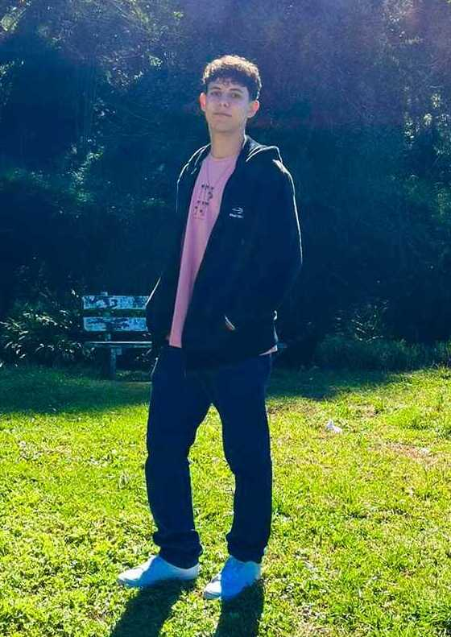

Cine Murilo
Plataforma de busca de filme recem-lançados podendo salvar e assitir ao trailer Desenvolvido durante o curso de Sujeito de Programador.


HTML5 ,REACT ,CSS3
MuriloDev


Sou desenvolvedor Full Stack.

Desde pequeno, sempre fui apaixonado por tecnologia, principalmente pelo meu amor por jogos, o que despertou minha curiosidade e interesse pelo mundo digital. Com o tempo , vi uma oportunidade de expandir e aprofundar meus conhecimentos na área de tecnologia, o que me levou a cursar Sistemas de Informação na UNISANTA em 2025.
Desde então, me apaixonei de verdade pela área. Gosto de trabalhar em desafios reais e construir soluções inovadoras, e estou sempre ansioso para aprender mais , crescer profissionalmente e assumir novos desafios na área de tecnologia. Nunca trabalhei na área de tecnologia, mas fiz parte da banda municipal de Peruíbe. Foi lá que aprendi a ser proativo, a me comunicar bem e a trabalhar com eficiência em equipe — habilidades essenciais em um grupo grande.
Estou sempre em busca de mais aprendizagem, e atrás de oportunidades que me façam evoluir , não só como um bom profissional mas como pessoa
Plataforma de busca de filme recem-lançados podendo salvar e assitir ao trailer Desenvolvido durante o curso de Sujeito de Programador.
HTML5 ,REACT ,CSS3
Plataforma de busca de Pokémon com pesquisa por nome e exibição de informações principais como imagem, ordem e tipos..

HTML5 ,CSS3 ,JavaScript (ES6+)